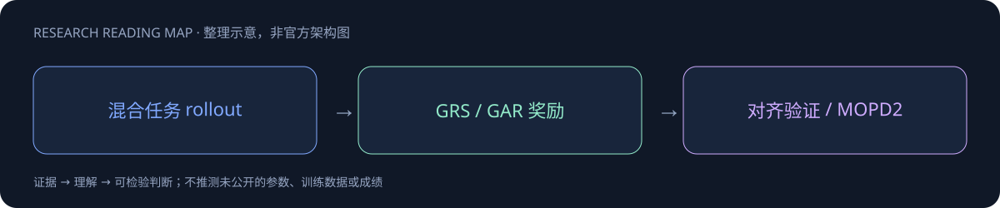

ω BrainHao · Research Atlas
📚 源笔记：MiMo-V2.6
2026-09-22 · 主干正代
MiMo-V2.6
Pro / Flash / UltraSpeed family；混合 Agent RL、组内 grader 与 MOPD2，1M 原生全模态。
309B / 15B active（Flash）
1.02T / 42B active（Pro）
1M context；图像、视频、音频、文本

核心理解
重点是将 reward 的质量与策略能力一起放大。二元成功奖励无法比较多个成功解，GRS 抽取组内差异生成 rubric，GAR 重新分配通过轨迹优势；这比仅增加 rollout 更直接地减少低效工具路径。MOPD2 用自主 rollout 与 teacher/SFT 历史前缀共同蒸馏，让难验证任务也能获得监督。
值得做的实验
验收必须同时报告成功率、工具重复率、每个成功任务 token 与 grader 成本。比较 RL 与 MOPD checkpoint，保持 harness 和任务一致，避免把重复率改善归因于架构。
证据与验收边界
只使用已取得的官方资料。不把不同harness、数据子集、推理预算或服务SKU当作同口径横评；确切发布日期未证实的节点单列待核实。
本Poster是研究研读摘要，不是完整技术报告或已复现实验。全文笔记显著标明资料不足、未读报告和归档缺口，请以其证据边界为准。
📖 阅读完整渲染笔记